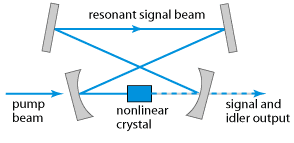
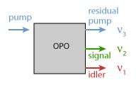
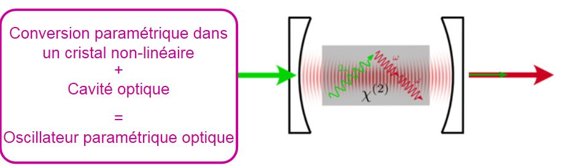

|  |
An optical
parametric oscillator is a laser device in which in a nonlinear process one
short wavelength pump photon is split into two longer wavelength photons
(Signal and Idler). The wavelength of Signal and Idler are not independent from
each other, but can be tuned in wavelength, making the OPO a tunable laser
source. They can be
directly operated with laser oscillators without additional amplifiers as pump
source. The OPOs are manufactured in different versions to cover various output
parameters.
|

|
|
An optical
parametric oscillator is a light source similar to a laser, also using a kind of laser resonator, but based on optical gain from parametric amplification in a nonlinear crystal rather than from stimulated emission. Like a laser, such a device exhibits a threshold for the pump power, below which there is
negligible output power (only some parametric fluorescence). Although
parametric oscillators are in many respects similar to lasers, there are also a couple of important
differences: - Whereas many lasers can be
operated with spatially incoherent pump sources, a parametric oscillator
requires relatively high spatial coherence of its pump. In most cases, a diode-pumped solid-state laser is used.
-
Whereas the emission wavelength
of most lasers can be tuned only in a narrow range, many
parametric oscillators offer the potential for wavelength tuning with extremely wide tuning
ranges. These may span regions in the visible, near or mid-infrared part of the electromagnetic spectrum.
Particularly in the mid-infrared region, OPOs are very commonly
used, because there is little competition from mid-IR lasers.
|  | - The parametric amplification
process requires phase matching to be efficient. The phase-matching
details also determine the oscillation wavelength. Wavelength tuning is in
most cases achieved by influencing the phase-matching conditions, e.g. by
changing the crystal temperature, the angular orientation of the crystal
(for critical phase matching), or the poling period (for quasi-phase matching in periodically poled crystals). Within the phase-matching
bandwidth, tuning is also possible with an intracavity optical filter. The tuning range can be limited either
by restrictions of phase matching (see below), or by the transparency
region of the nonlinear material or by the spectral region with
high reflectivity of the resonator mirrors.
- The parametric amplification occurs only in the direction
of the pump beam (as another consequence of phase matching), which means
that a unidirectional operation in a ring resonator is automatically
obtained. (In fact, ring resonators are often used, due to various
advantages.)
|